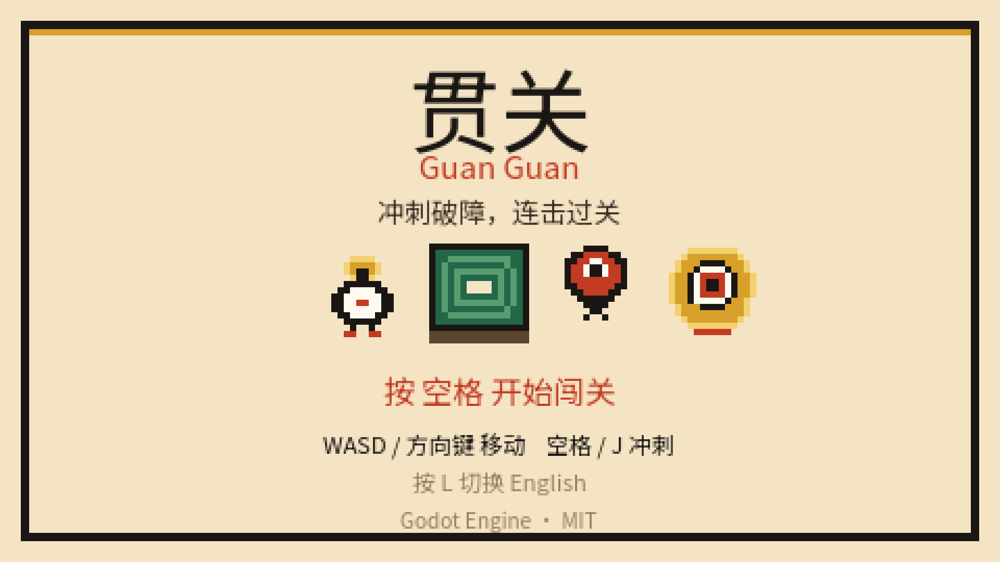
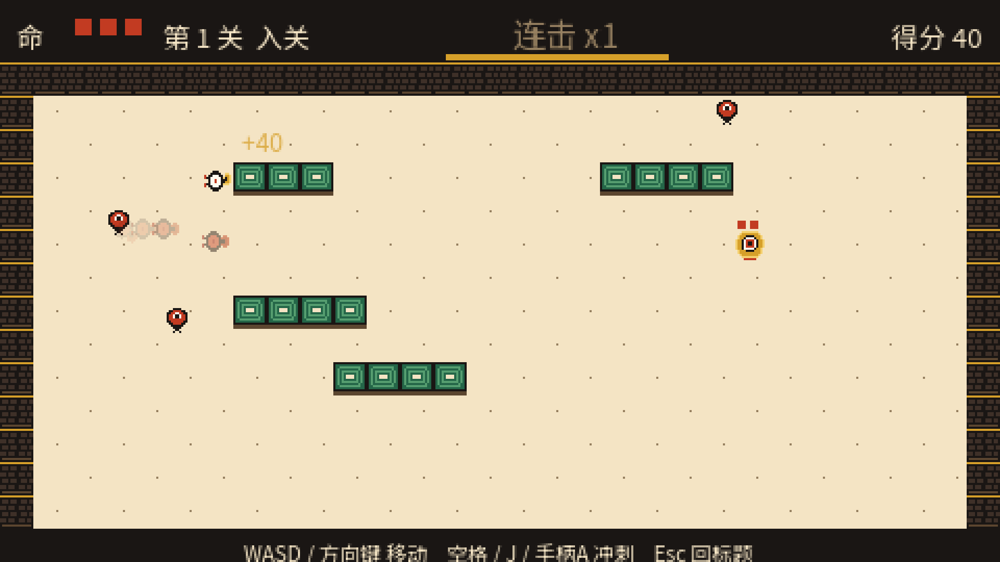
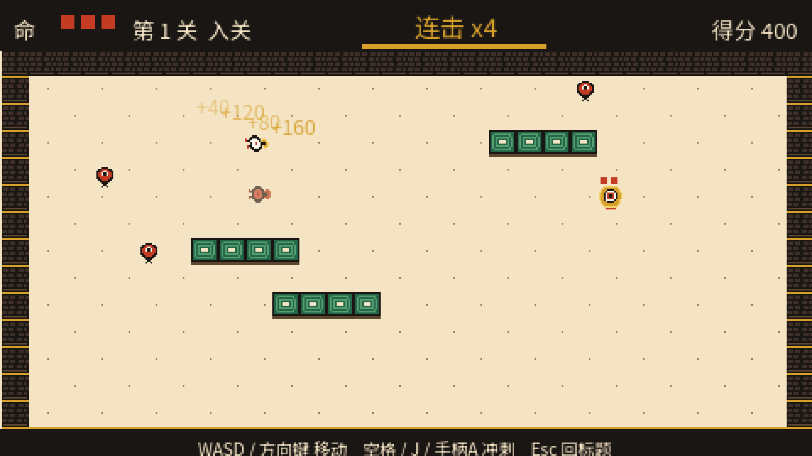
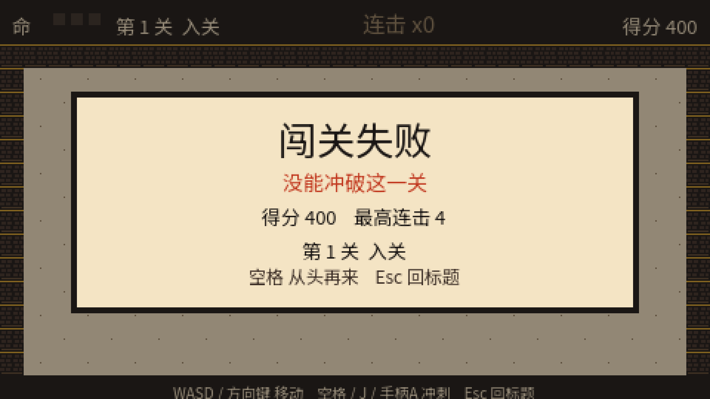
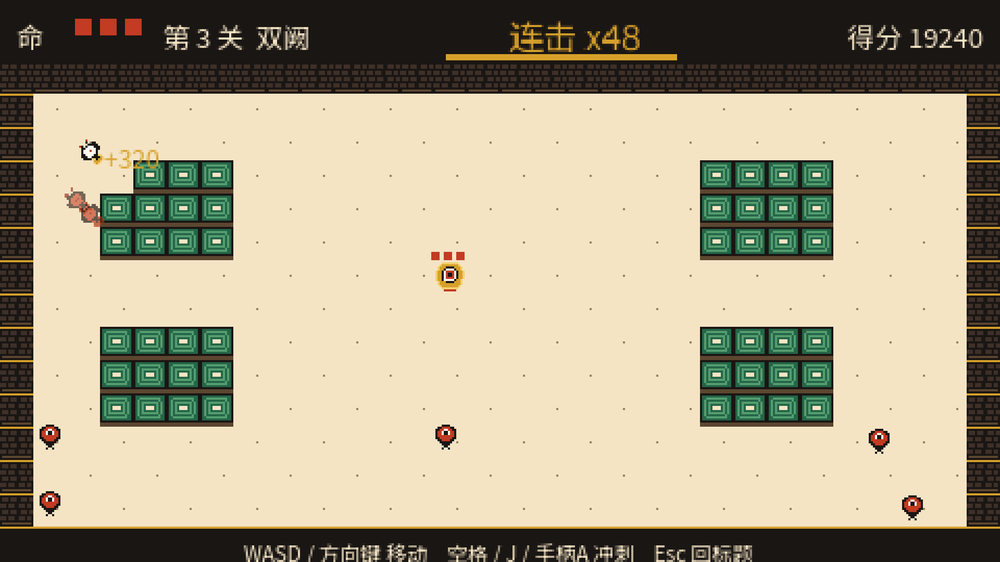
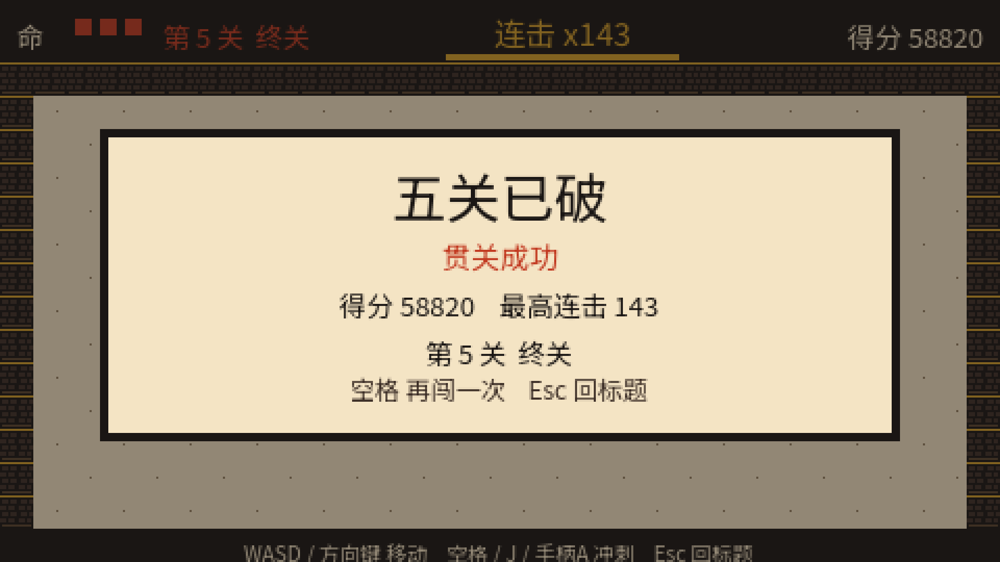

贯关
一局一两分钟的俯视闯关。一次冲刺撞碎路障、击退守关的影子，并把连击打进关印。一共五关，三条命。没有养成，没有内购，可以离线玩。
贯关是一款很短的单人闯关游戏。每一局大约一两分钟。你要冲过五座院子，把尽头的关印打碎。
操作只有移动和一次冲刺。WASD 或方向键移动，空格或 J 冲刺。手柄用左摇杆或方向键移动，A 键冲刺。冲刺会沿面朝的方向撞出去，打碎路上的玉障，击中守关的影子，并敲打关印。关印要连着撞好几下才会破。在连击消退前继续命中，得分会按连击提高，最高按八倍计算。
被影子撞到会失去一条命，连击也会清零。一共三条命。命用完了，这一局结束，从第一关重来。五关都破了，这一局就算通过。没有角色成长，没有装备，没有关卡之外的进度。
五关依次是：入关、窄廊、双阙、叠障、终关。院子是俯视的，不是往下掉的井。
标题画面按 L 可以在简体中文和英文之间切换。Esc 回到标题，F11 全屏。游戏可以离线运行。支持键盘，也支持常见手柄。
画面和音效都是为这个游戏做的，低色数的像素图，以及很短的合成音效。
English
A one-to-two minute top-down arcade run. One dash smashes barriers, strikes the gate shadows, and carries a combo into the seal. Five gates, three lives. No upgrades, no purchases, and it plays offline.
Guan Guan is a short single-player arcade game. A run lasts about one or two minutes. You cross five courtyards and break the seal at the end of each one.
You can move, and you have one action: a dash. Move with WASD or the arrow keys. Dash with Space or J. On a gamepad, move with the left stick or the d-pad and dash with A. The dash travels in the direction you are facing. It breaks jade barriers, strikes the shadows guarding the gate, and chips the seal. The seal takes several hits. Land another hit before the combo fades and the score for that hit rises with the chain, up to eight times.
Touching a shadow costs one life and clears the combo. You have three lives. At zero, the run ends and you start again from the first gate. Breaking all five seals clears the run. There is no character growth, no equipment, and no progress outside the run.
The gates are: First Gate, Narrow Gallery, Twin Towers, Stacked Blocks, and Last Gate. The courtyards are top-down.
On the title screen, L switches between Simplified Chinese and English. Esc returns to the title. F11 toggles fullscreen. The game is offline. It supports a keyboard and a standard gamepad.
The pixel art and the short synthesized sound effects were made for this game.





